Carrito de compras desarrollado con HTML/CSS y Vanilla JavaScript
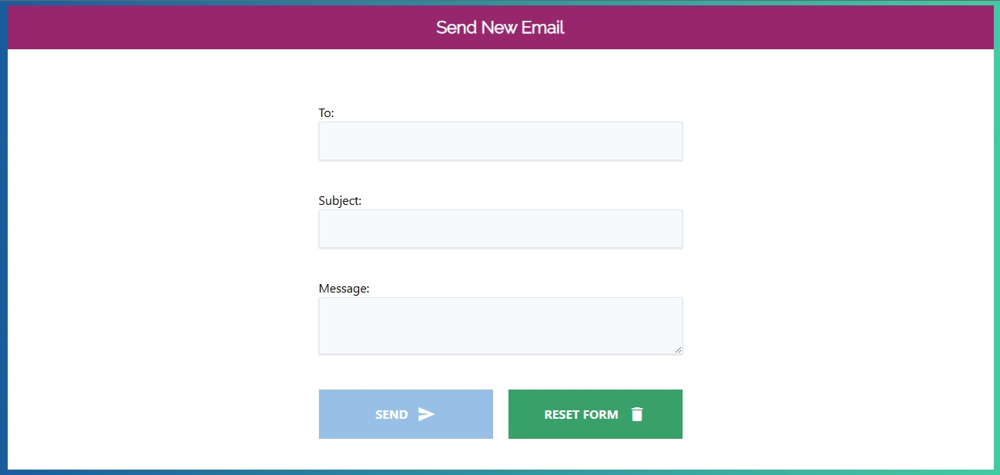
Formulario de envío de e-mails
Formulario para e-mails con Vanilla JavaScript. Contiene eventos de validación de campos.
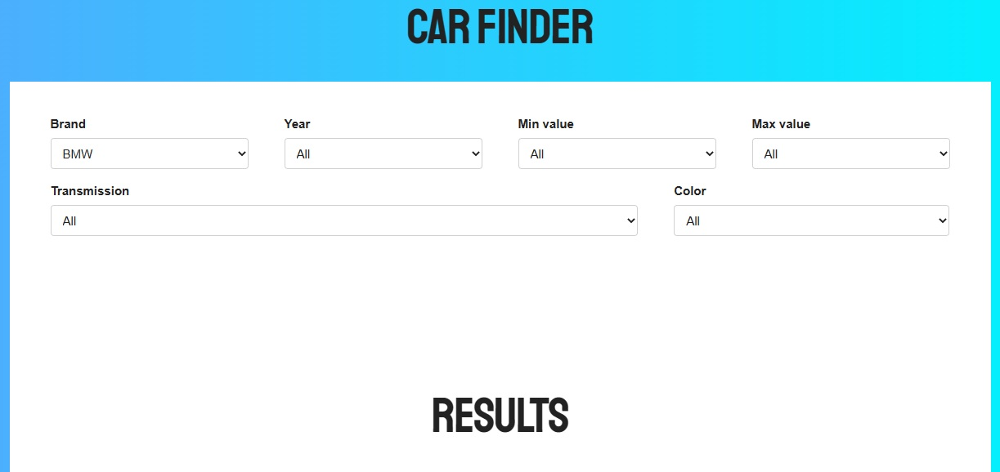
Buscador de Autos
Aplicación para buscar autos por marcas usando filtros con Vanilla JavaScript
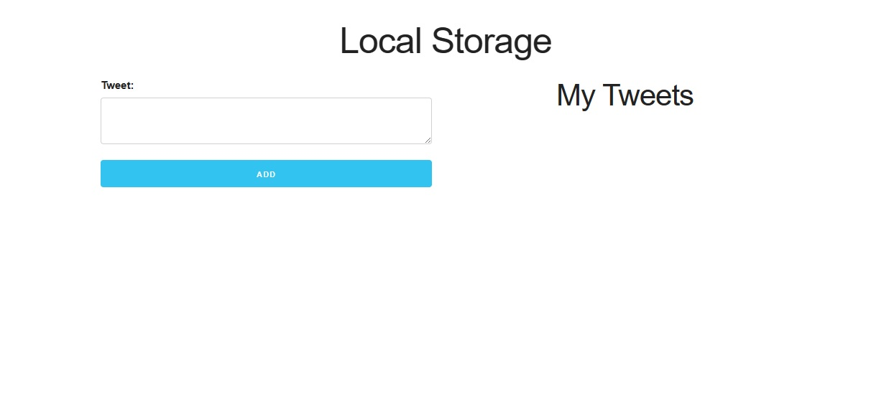
To-Do List / Tweets
Aplicacion que utilizando el LocalStorage, Prototypes y validación de Formulario, puede usarse para crear una lista de cosas por hacer o simular tweets.
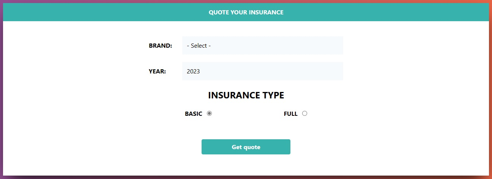
Cotizador de Seguros
Cotizador utilizando Vanilla JavaScript. Implementación con prototypes y validaciónes.
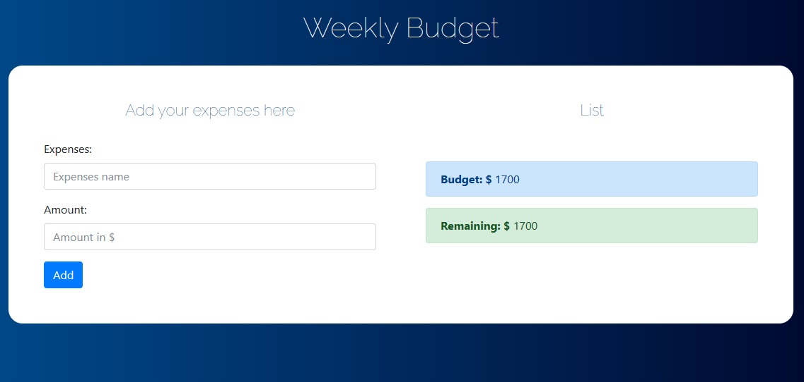
Administrador de Presupuesto
Implementación de la programación orientada a objetos en JavaScript. En esta app se puede administrar los ingresos y gastos semanales.
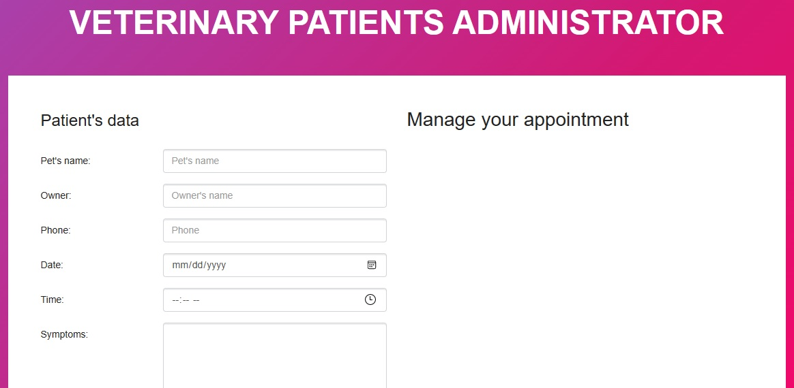
Administrador de Citas
Administrador de pacientes en una veterinaria. Hecho con Vanilla JavaScript. Implementacións de IndexedDB.
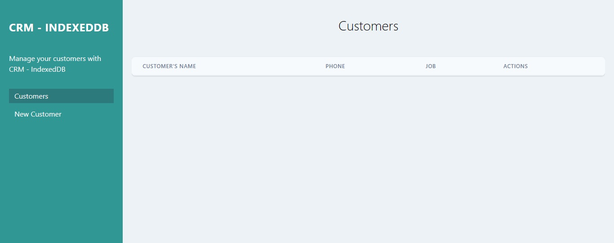
CRM
Administrador de clientes. Conecta con una base de datos e implementa IndexedDB.
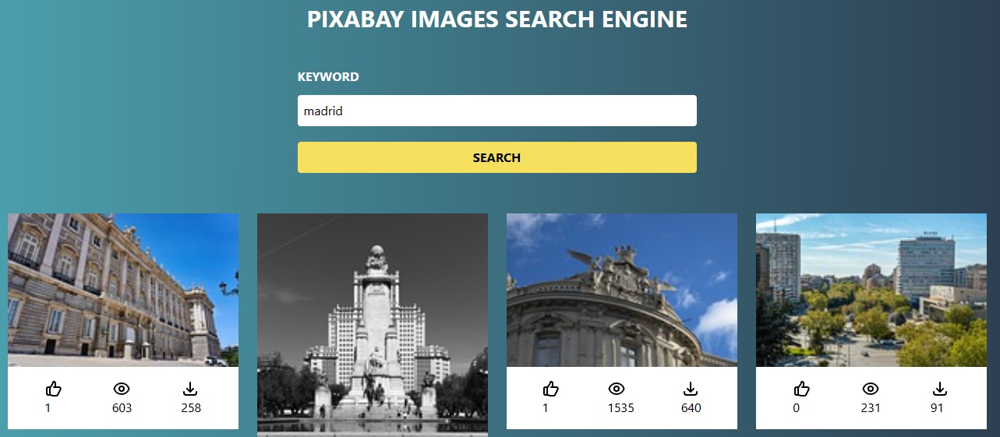
Buscador de Imágenes
Utilizala API de Pixabay, implementa programación asincronica. Utiliza la API Fetch, Promises y Callbacks.
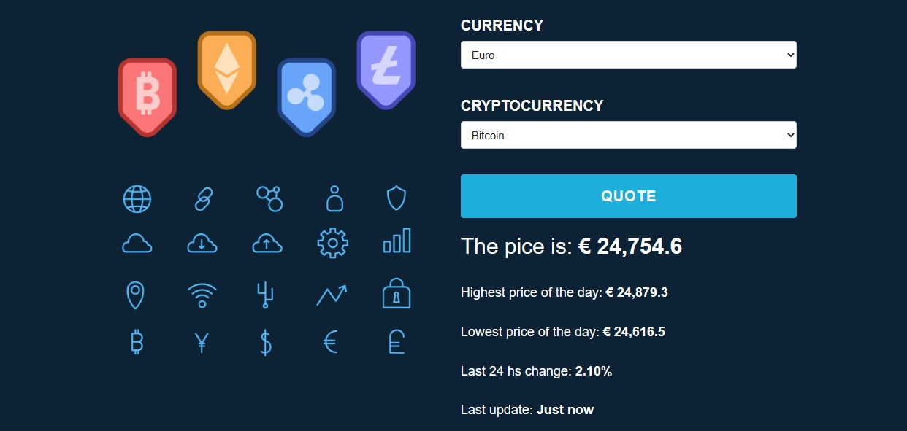
Cotizador de Criptomonedas
Utilizala la API de cryptocompare para obtener diferentes cotizaciones, implementa programación asincronica. Utiliza la API Fetch, Promises y Callbacks.
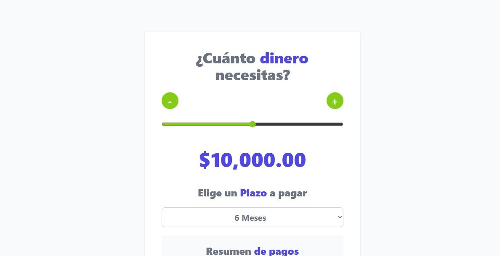
Cotizador de Préstamos
Primer proyecto utilizando React.js + Vite. Implementa TailwindCSS como pre-procesador.
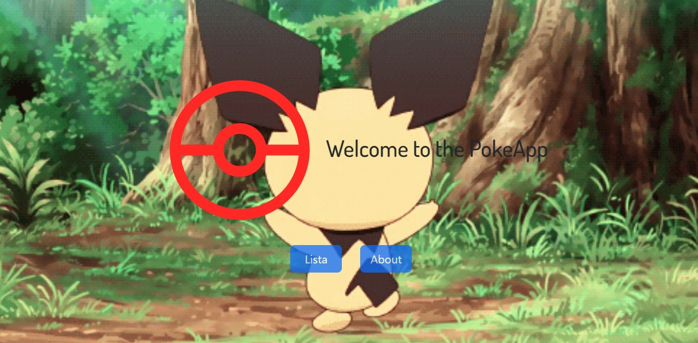
Pokedex - PokeApp
Es un proyecto llamado la PokeApp que utiliza la PokeAPI. Esta hecho con React.js utilizando Next.js y Bootstrap como pre-procesador.